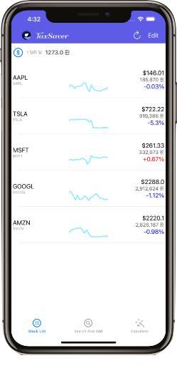
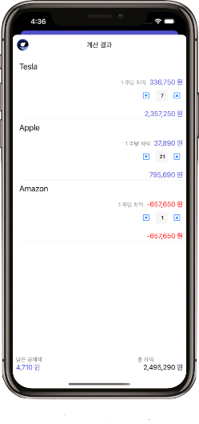

해외주식을 팔아 발생한 수익의 약 22% 정도의 세금을 내야 합니다. 하지만 그 중 매년 250만원의 세금이 공제됩니다. 따라서 가장 유리한 절세 방법은 차익을 250만원에 맞추는 것입니다. StockTaxSaver 앱의 계산기 기능을 이용하시면 편리하게 공제금액에 맞춰 팔아야 하는 주식의 양을 계산할 수 있습니다.
하루동안 주식앱의 이용 이유 중 가장 큰 비중을 차지하는 건 단순히 주식 가격을 확인하는 것입니다. 로그인, 회원가입, 인증등 불편하고 불필요한 절차들을 없애고 오로지 필요한 정보들만 제공하는 앱입니다.
250만원의 공제금액을 정확이 맞추기 위해선 주식을 팔았을때 생기는 차익을 알아야 합니다. 매도할 주식의 개수를 조정하며 실시간으로 남아있는 공제금액과 총차익을 확인하세요.
